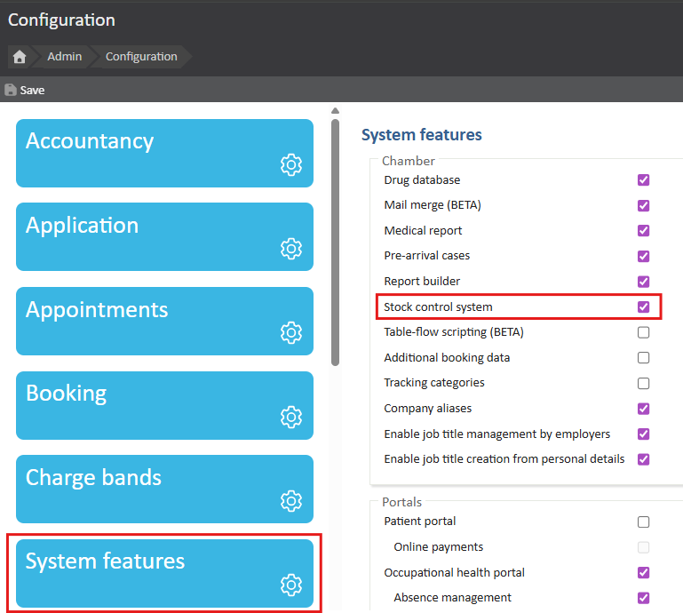
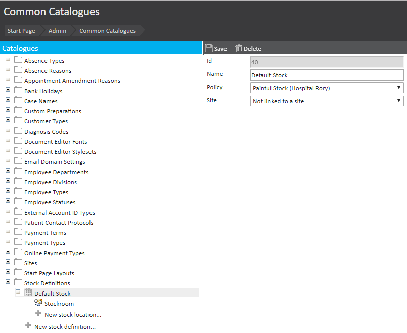
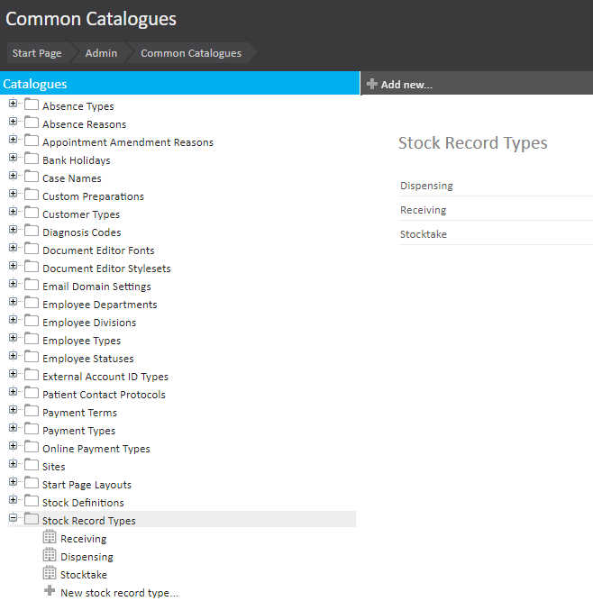
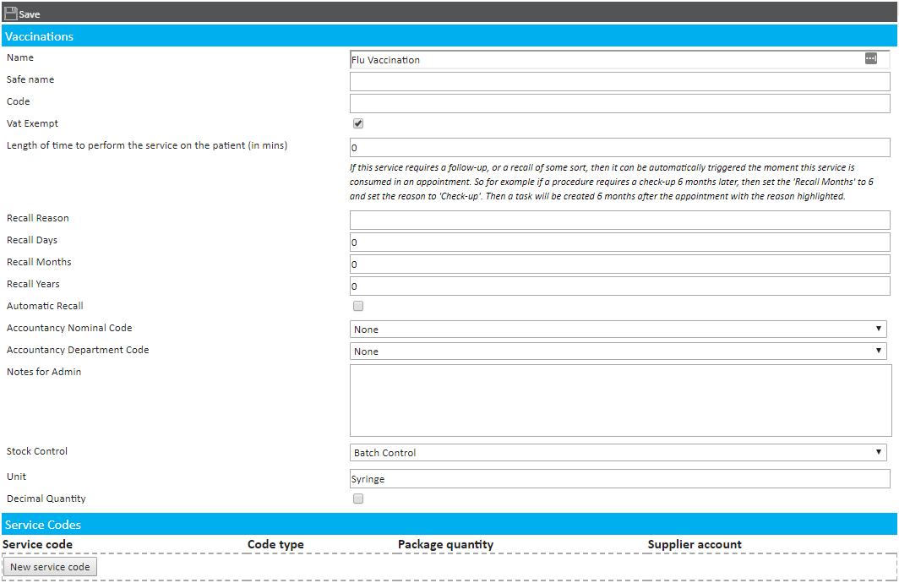
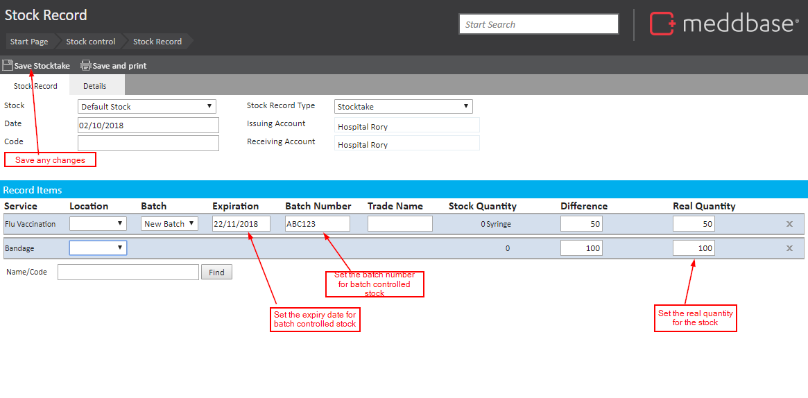
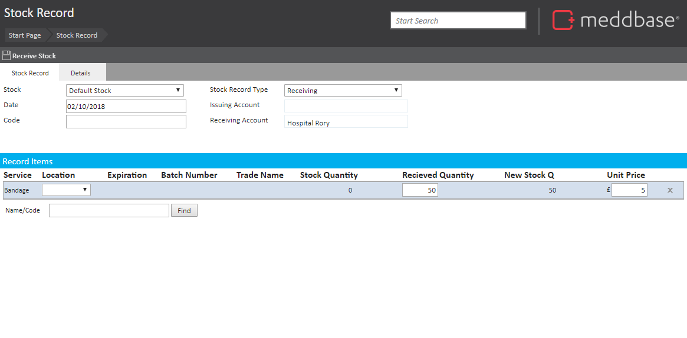
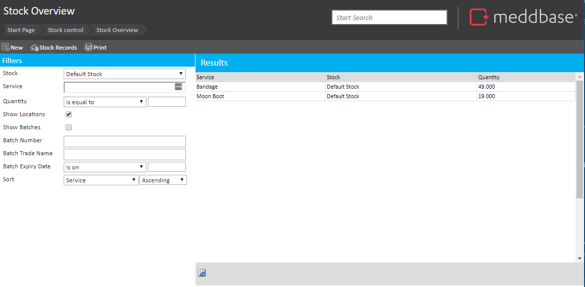
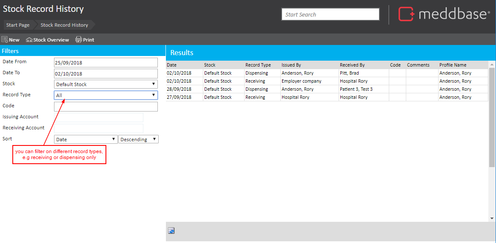
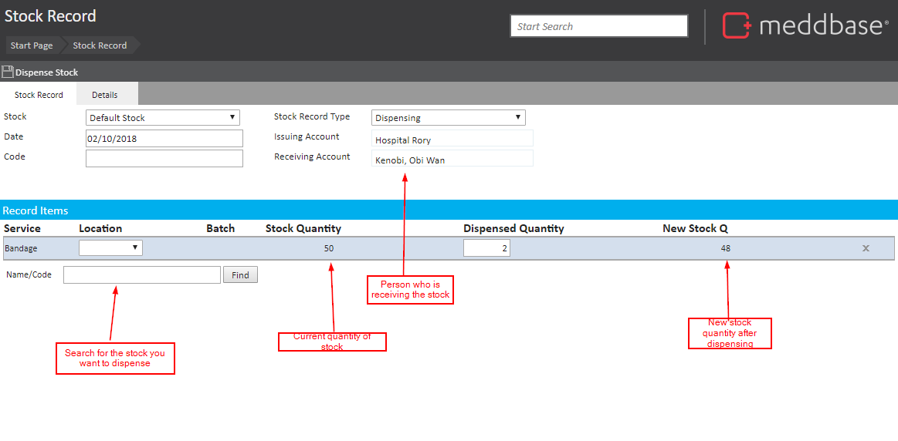

Stock control can be used to manage stock within Meddbase, in this article we will go through the setup and the various features within stock control.
Configuration
Firstly, you will need to enable the feature by going to Admin > Configuration > System features and check Stock Control System.

Define where stock is kept by going to Admin > Common Catalogues > Stock Definitions
Stock Definitions: Places where stock can reside (this could be a site, or a specific room). These can be linked to a site, so when a patient is at an appointment at a specific site, only the stock from that site can be dispensed.
(optional) Stock Locations: You can also set stock to a location (this could be a room, or a specific draw or fridge for example).

Define how stock changes by going to Admin > Common Catalogues > Stock Record Types
There are 3 basic types of stock movement:
Receiving stock - coming from another place in to another
Dispense stock - Moving Stock from one location to another
Stocktake - Updating stock quantities. This usually happens because someone has made a mistake at some point.

Who can manage stock?
This is configured under Admin > Security Policies > Stock Control Certificates.
What is our stock?
Stock can be set up in Admin > Service Management
Only products and vaccinations can be stock controlled
Stock control: a number of a specific thing, no expiry date - e.g. gym balls
Batch control: where you need to keep track of the expiry dates of stock
Unit: a way of measuring, e.g. a pack of tablets
Decimal quantity: can you give a fraction of this? E.g. you could give half a pack of tablets, but you couldn’t give half a vaccination.
Service codes: usually for integration with bar code scanner, usually for receipt and stock take.

Billing Rules – You must add your stock items (be these products or vaccinations) to the billing rules.
Stock Preference – You can define your default stock place by going to the Start Page > clicking on Settings > Preferences > Default Stock.
Managing Stock
Stocktake is where you would add your stock for the first time. You would also come here to adjust your stock for example if there had been breakage.
Issuing account: is the account (company or person) that is issuing the stock.
Receiving account: is the account (company or person) that is receiving the stock.
When recording items, all the information must be filled in.

Receiving Stock is where you would add any received stock. You can add stock here for the first time if you wish.
You must select an issuing account
Unit price is simply for reporting purposes - you can report on the cost of appointments where you dispensed products/vaccinations.

Dispensing Stock
Receiving account: this could be a company or a patient. If you are using this for wastage, you must have a company called wastage to dispense to them.
Stock Overview: This page shows how much stock you have across different locations. You can search for specific places, specific services, or places where you have less than a certain quantity of stock left.

Stock Record: This page is for tracking stock movements, e.g. what stock has been dispensed, or received. You can also see who stock was issues by or received by.

Dispensing Stock
There are different types of codes you can assign to a product and/or vaccine. These are:-
Stock can be dispensed from two places, either directly from the Stock Control tile, or from within a consultation.
Stock Tile
Go to ‘Dispense Stock’
Search for the service (product or vaccination) you wish to dispense
Select the batch and define how many you are dispensing
Select the place you are dispensing from
Select the date
Select the type of dispensing you are doing
Define the issuing account (i.e. who is dispensing) – this will default to your company
Define the receiving account (i.e. the patient or other account you are dispensing to)
Finally, click the ‘Dispense Stock’ button.

Consultation
Add the service you wish to dispense by clicking ‘Add services’